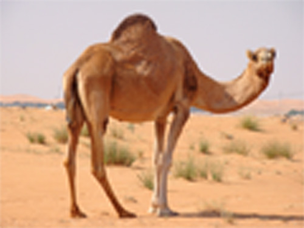
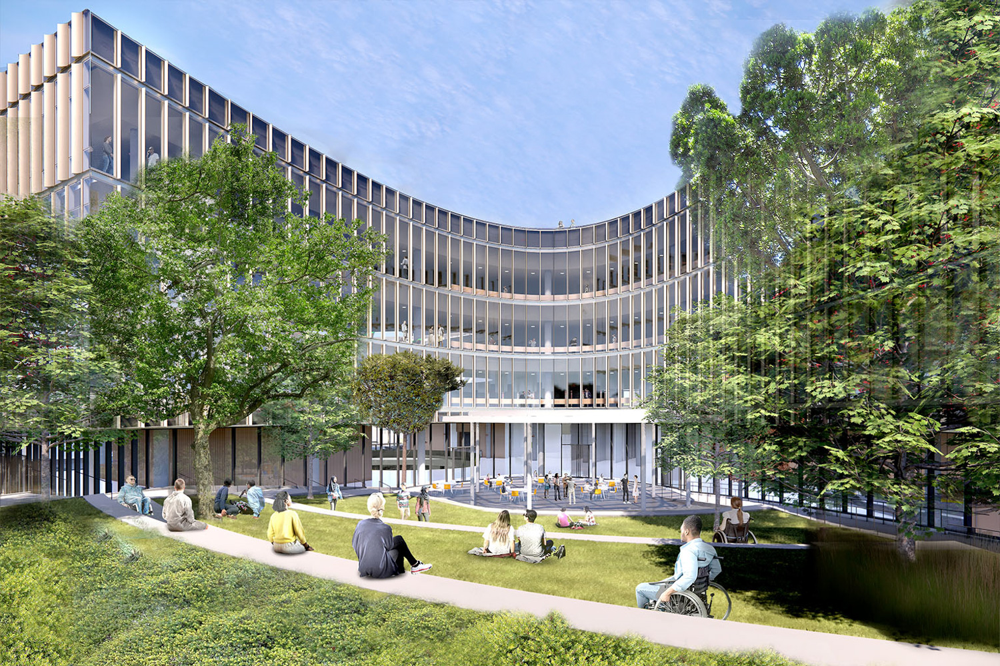
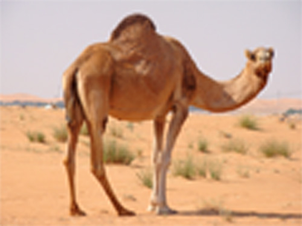
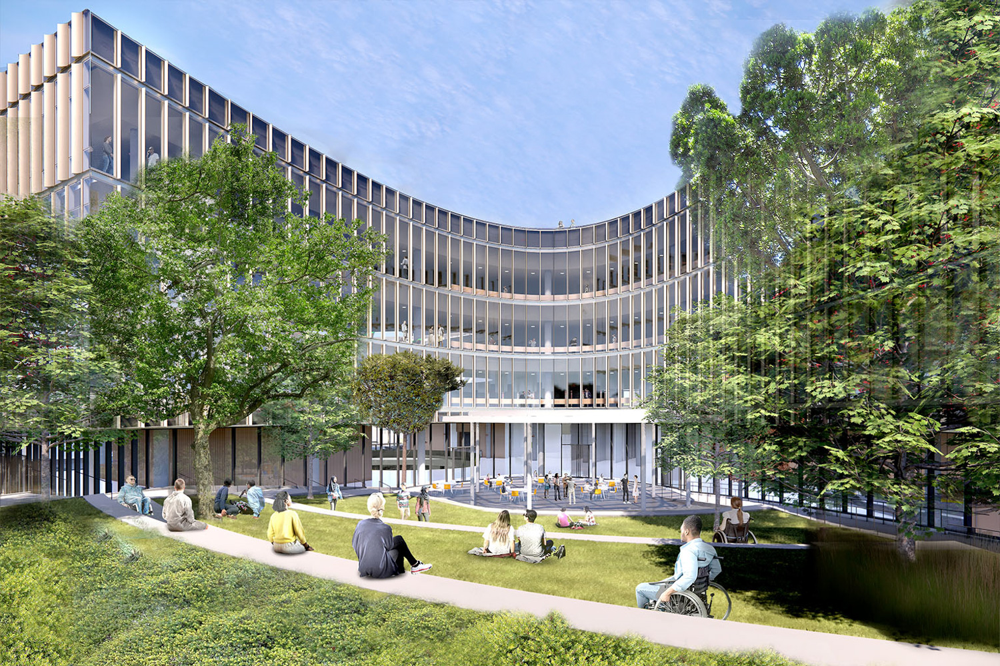

Part 1 — Fun with Filters
1.1 Convolutions from Scratch
I implemented 2D convolution with: (a) four nested loops, (b) two loops with vectorized inner ops, and (c) compared against
scipy.signal.convolve2d. I used zero padding. Below is a snippet for the looped version.
# 4 loops (numpy)
def conv_4(img, kernel):
h, w = img.shape
kh, kw = kernel.shape
pad_h = kh // 2
pad_w = kw // 2
padded_img = np.pad(img, ((pad_h,pad_h),(pad_w,pad_w)), mode="constant", constant_values=0)
kernel = np.flip(kernel)
out = np.zeros(img.shape)
if kernel.sum() != 0:
kernel = kernel / kernel.sum()
for i in range(h):
for j in range(w):
for k in range(kh):
for l in range(kw):
out[i][j] += padded_img[i+k][j+l] * kernel[k][l]
return out # 2 loops (numpy)
def conv_2(img, kernel):
h, w = img.shape
kh, kw = kernel.shape
pad_h = kh // 2
pad_w = kw // 2
padded_img = np.pad(img, ((pad_h,pad_h),(pad_w,pad_w)), mode="constant", constant_values=0)
kernel = np.flip(kernel)
out = np.zeros(img.shape)
if kernel.sum() != 0:
kernel = kernel / kernel.sum()
for i in range(h):
for j in range(w):
mask = padded_img[i:i+kh, j:j+kw]
out[i][j] = np.sum(mask * kernel)
return out # scipy.signal.convolve2d
signal.convolve2d(img, kernel, mode="same", boundary="fill", fillvalue=0)
To compare the efficiency in terms of run time, the 4-loop ran for the longest (around 10 seconds to complete the box filter),
and the second longest was te 2-loop, where it took around 0.7 seconds to complete. The fastest was Using the scipy.signal.convolve2d
code, where it took 0.0 second to complete the box filter convolution.
1.2 Finite Difference Operator
Using Dx and Dy, I computed partial derivatives, gradient magnitude, and a binarized edge map (threshold tuned qualitatively).
1.3 Derivative of Gaussian (DoG)
To suppress noise, I blurred with a Gaussian before differencing, and also built DoG filters directly by convolving the Gaussian with Dx/Dy and applying the resulting filters to the image—both paths matched numerically.
 


